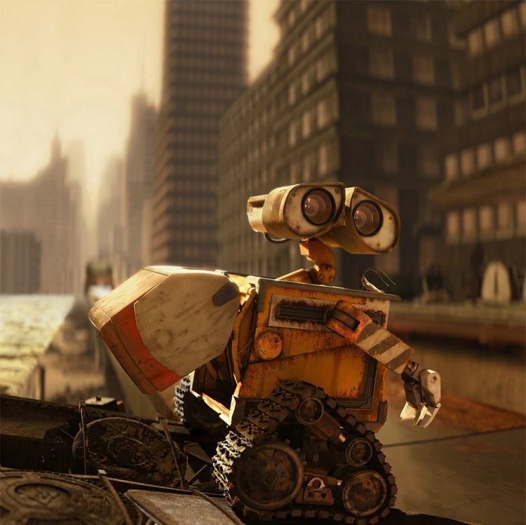
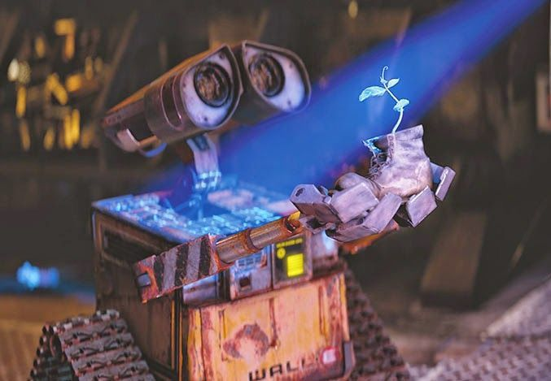
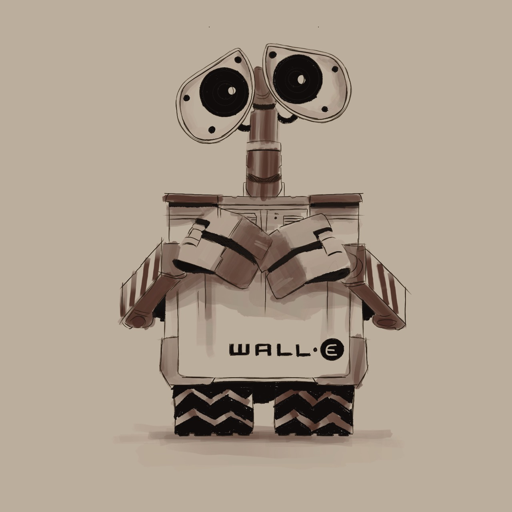
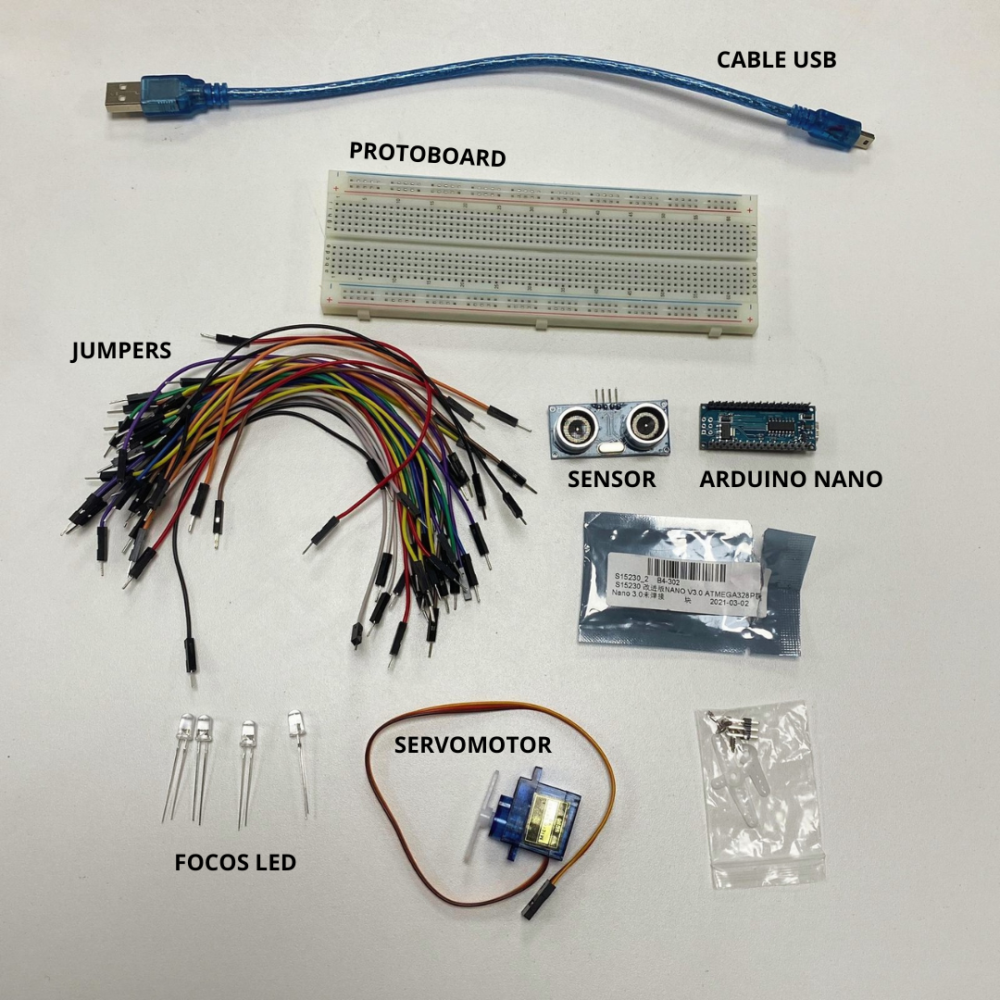
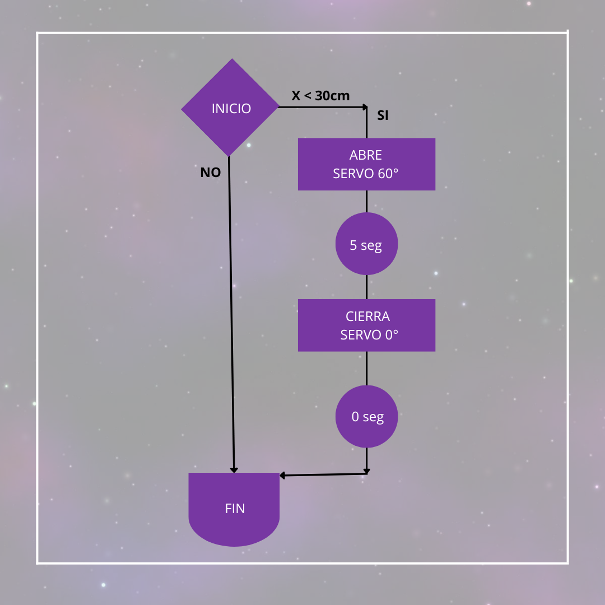
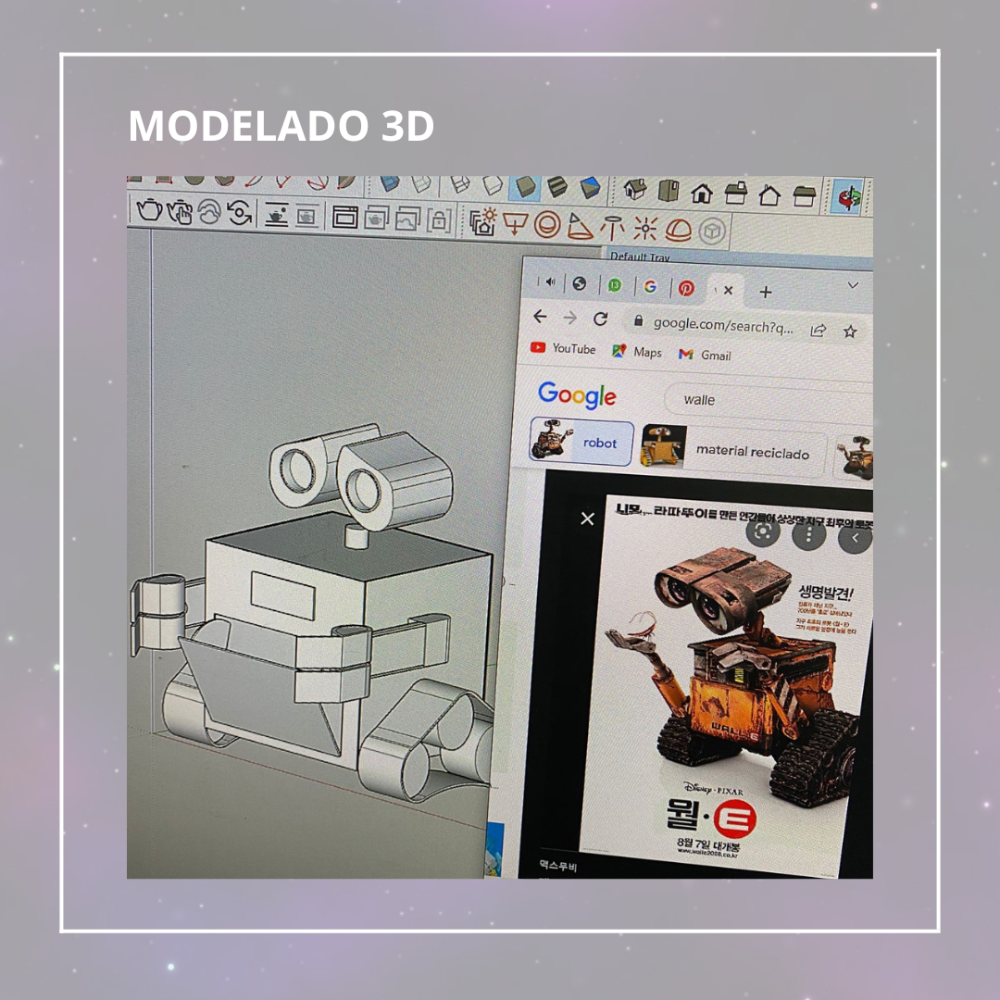

Propuesta

Wall-e nace bajo el contexto de incentivar a las personas a tirar la basura en un tacho, especialmente a los niños. Logrando hacer de esto una actividad entretenida y sencilla.
Se optó por Wall-e para la realización del proyecto ya que es personaje que busca darle utilidad a los objetos abandonados en un acto de reparar, reciclar y reusar. No se trata solo de apoyarnos en Wall-e para la imagen de nuestro proyecto, nosotros lo representaremos dando el mensaje de reciclar basura y no simplemente tirarla en cualquier lugar.
¿Quienes somos?

MISIÓN: Con este proyecto queremos ser la mejor opción para enseñar a cuidar el medio ambiente a las nuevas generaciones de una manera didáctica y entretenida.
VISIÓN: El proyecto wall-e se visualiza conquistando al público de cualquier parte del mundo y de cualquier edad, deseamos que los usuarios se identifique con el propósito del proyecto que es educar y concientizar de una forma dinámica e interactiva sobre la contaminación ambiental, así generar conciencia en muchas más personas.
Bocetos

Como podrás visualizar, realizamos el boceto de nuestro Wall-E basandonos enteramente en el diseño original de la pelicula Wall-E. Dicha pelicula fue dirigida por Andrew Stanton
Integrantes:
Goméz Ordinola, Mary
Dirección y diseño publicitario.
Hualpa Gonzales, Mirella
Dirección y diseño gráfico.
Kameya Milla, Reiko
Comunicación audiovisual y multimedia.
Rueda Florian, Sandro
Comunicación audiovisual y multimedia.
Tejada Morales, Maria Alexandra
Arquitectura de Interiores
Urbiola Herr, Nicole
Comunicación audiovisual y multimedia.
Contacto
Materiales
En esta sección de la página web de presentación del proyecto se muestran los materiales usados para la elaboración del Wall-e



Procedimiento
En esta sección de la página web de presentación del proyecto se muestran los procedimientos llevados a cabo para la elaboración del Wall-e


Icons